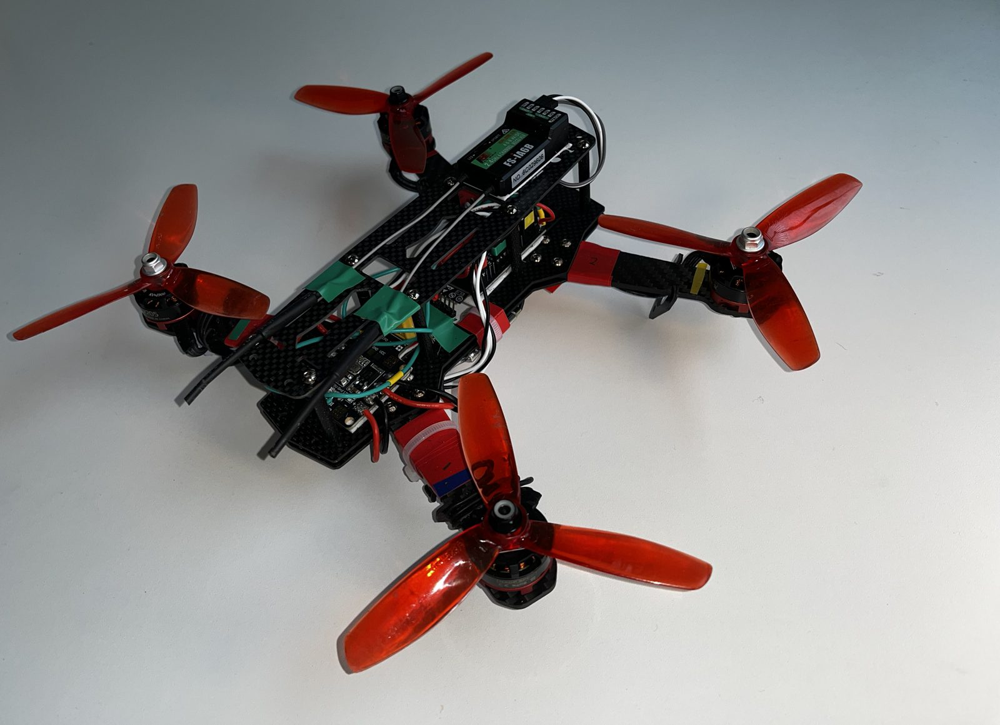
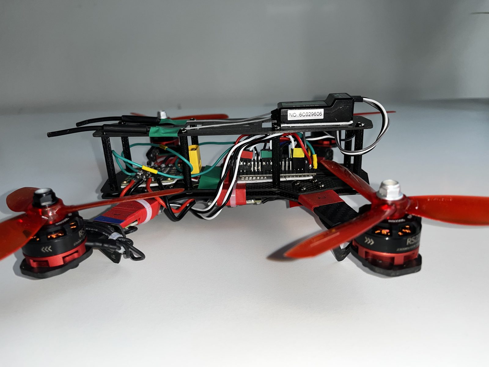

Featured · Hardware
Custom-Built 250-Class Quadcopter with an ESP32 Flight Controller
Built from individual parts instead of a kit. Instead of a dedicated flight controller board, it runs the open-source esp-fc firmware on a general-purpose ESP32.
- Hand-soldered every connection (motor-to-ESC, ESC-to-PDB, ESP32, sensor and receiver wiring) and continuity-tested each one
- Mapped GPIO pins and resolved pin conflicts, then configured the firmware through the CLI and Betaflight Configurator
- Calibrated the motors and ran bench failsafe checks before the first flight
- Tuned PID gains in Angle mode over several test flights, and adjusted weight distribution to remove an over-adjustment oscillation
- Frame
- 250mm carbon fiber, QAV250-style
- Controller
- ESP32 (Freenove WROOM) running esp-fc
- Motors
- 4× RS2205 2300KV, BLHeli-S ESCs
- Power
- 3S LiPo through a PDB, plus a regulated 5V line
- Sensor
- MPU6050 gyro/accelerometer over I2C
- Radio
- FlySky FS-i6 and FS-iA6B over iBus